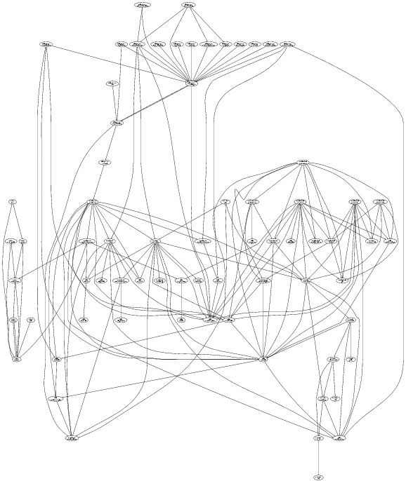

This picture was generated from the TortoiseCVS source code on 23 Feb 2002. The arrows represent a dependency by one module of the code on another module.

You can inspect a graph and find where there are unnecessary dependencies. This might be because of a forgotten #include, or because there is a straightforward way to rewrite the code without the dependency. This will speed up compile times, and make code more useful to steal for later projects.
This is the Perl script which analyses C/C++ code and produces a #include dependency graph. The output from the script is a dot file for input into graphviz. This is an improved version of the original script, which you can find here. Many thanks to Darxus for creating the original. The new version adds directory clustering, file include path searching and various other features.
cinclude2dot (perl script) - Version 1.1 (8.1k) - Generates C/C++ dependency graphs
cinclude2dot.1 (man page) - Documentation in Unix man file format (thanks to John Murdie, may be out of date)
For usage instructions, run the script with --help.
| To Francis's page | $Id: index.html 691 2005-12-13 02:15:11Z francis $ |